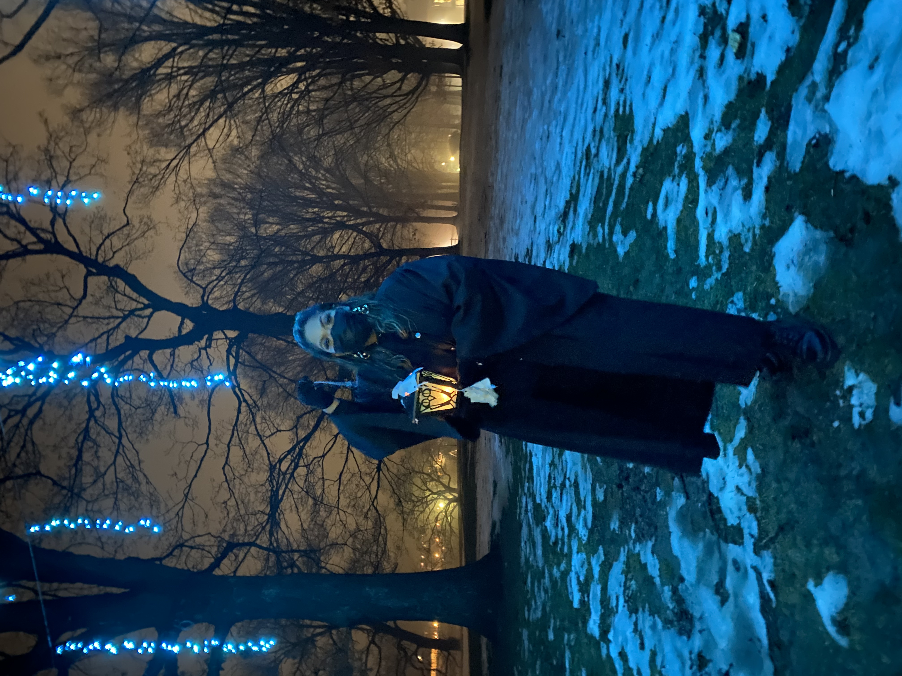
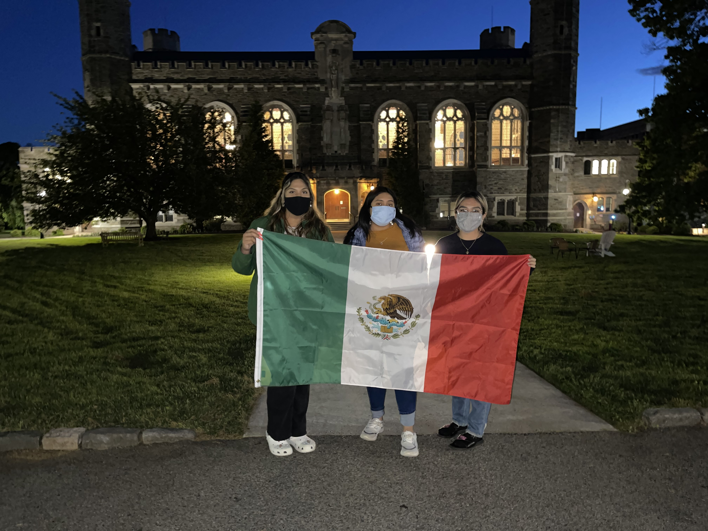

Welcome to a page all 'bout ME!
~~~~~~~~~~~~~~~~~~~~~~~~~~~~~~~~~~~~~~~~~~~~~~~~~~~~~~~~~~~~~~~~~~~~~~~~~~~~~~~~~~~~~~~~~~~~~~~~~~~~~~~~~~~~~~~~~~~~~~~~~~~~~~~~~~~~~~~

Hello, my name is Jazmin Osorio-Rodriguez!
- she/her pronouns
- Proud Mexican-Salvadoran
- Born March 9, 2002 in Miami, Florida
- Been in Houston, Texas since 2016
- Rising Sophmore at Bryn Mawr College
- Psychology Major, minoring in Education and Health Studies
- Love music! Currently listening to Bad Bunny and Grupo Firme on repeat
- Enjoy painting, watching Netflix (started the Good Place), and word search puzzles!
- I can't drive, but hope to learn this summer!
- I am afraid of heights, but love rollercoastrs!